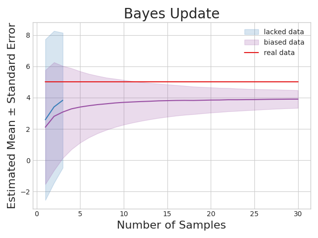
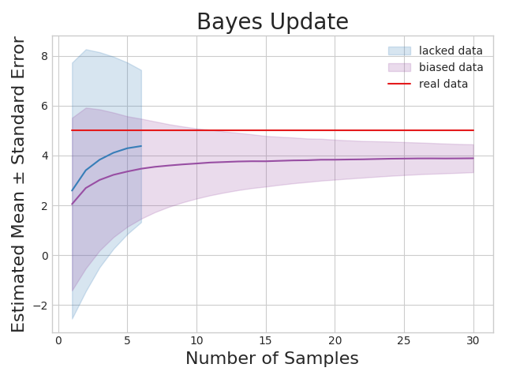
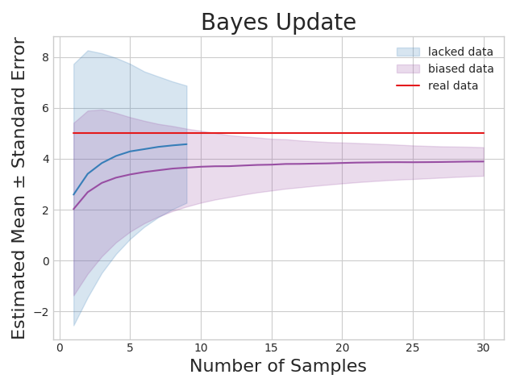
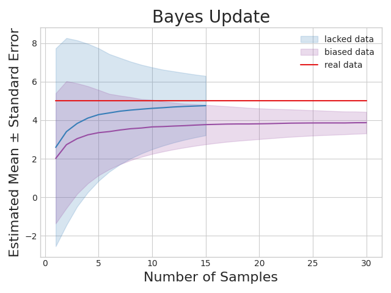
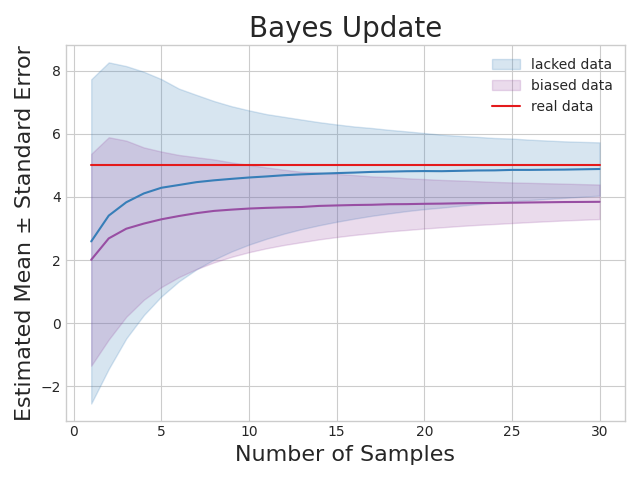
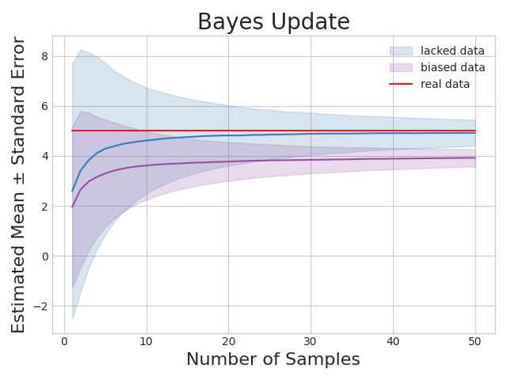
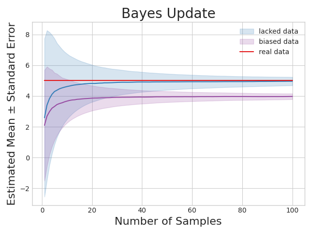

数据伦理课的小作业, 作业要求是200字左右稍微做些讨论即可.
刚好前段时间对变分推断非常感兴趣, 其中非常重要的贝叶斯推断和共轭分布的技巧可以放到这里. 于是便顺手做了一些小小的推导, 并使用代码进行了一定的测试.
数据有效性
题目要求
假设你目前想要收集不同人群对疫情防控的看法, 需要一个朋友一起完成电话调查. 假设你有两个朋友愿意参与这个项目:
- 一个朋友比较粗心, 在调查中遗漏一些问题. 因此他收集的调查结果有很多缺失;
- 另一位朋友表达能力弱, 在电话调查中他表述的问题有误, 偶尔让受访者产生误解, 因此他收集的调查结果存在一定的错误.
请问如果一定需要你从中选择一位朋友加入你的电话调查项目, 你会选择哪一位朋友? 请说明理由.
回答
正文
我会选择第一位朋友, 从贝叶斯的角度而言, 收集问卷数据, 从而获取认知的过程可以拆分为两步:
- 先验地假设收集不同人群对疫情防控的看法;
- 随着收集到的数据增多, 不断更正自己的先验观点.
由于大数定律, 如果数据是无偏的, 无论自己的先验假设是否正确(实际上先验假设往往不是正确的), 只要收集到的数据足够多, 最终观点会趋于正确.
除了大数定律以外, 还需要非常注意, 分析后验概率的方差

我构造了两种情形
- 蓝色: 数据量不够, 但是数据是无偏的
- 紫色: 数据量足够, 但是数据是有偏的
其中, 红色代表实际上的均值. 可以看到, 不论是蓝色还是红色, 它们的估计的均值都是不准确的. 然而
- 数据量不够的情形, 方差较大(即预测结果保留了相当多的不确定性), 预测的结果依然是[μ−σ,μ+σ]的区间内;
- 数据有偏的情形, 方差较小(由于观测到了大量数据, 因此对预测结果非常有把握), 但反而预测不准
由于正文篇幅有限, 因此相关的公式推导和代码放在附录当中.
附录A: 数学说明
假设的说明
- 为什么要使用贝叶斯推断?
- 其他的推断方式, 如大数定律, 只能分析样本均值的收敛性, 而无法分析样本方差的收敛性. 后者的重要性在该情境下不可忽略
- 贝叶斯推断提供了对样本方差分析的方法
- 假设似然函数服从高斯分布, 先验概率服从高斯伽马分布. 为何要取这样的分布?
- 这是由于在计算后验概率时, 分母中存在积分, 因此通常是不好处理的
- 高斯伽马分布(先验分布)是高斯分布(似然函数)的共轭分布, 因此在计算后验概率时, 只需要考虑分子中的联合分布, 并迭代参数即可
- 甚至不需要计算分子中的联合分布, 只需要拿现成的参数的迭代公式即可.
迭代步骤
-
θ为我们通过调查希望得到的内容(即人群对疫情防控的看法), 先验分布为π(θ)=p(0)(θ)
-
每一轮迭代可以获得新的数据(如新的问卷结果), 记作X(i), 共有n(i)条
-
当收到新的数据后, 我们的认知(通过问卷结果得到的人们对疫情防控的看法)发生更新, θ的分布迭代为后验分布
p(i+1)(θ)=∫θp(i)(θ)q(X(i)∣θ))dθp(i)(θ)q(X(i)∣θ)
查表可知, 参数的更新公式为. 相关的参数μ0, λ0, a0, b0是先验分布高斯伽马分布对应的参数, 这里不作过多介绍, 只需要看作常数即可. 但需要注意, 由于它们是先验分布的参数, 很可能是有偏的
μn=λ0+nλ0μ0+nxˉλn=λ0+nan=a0+2nbn=b0+2(λ0+n)λ0n(xˉ−μ0)2+21i=1∑n(xi−xˉ)2
由于共轭分布的计算满足结合律, 因此可以一次性将所有统计结果记作X=⋃i=1mX(i), 一共有n=∑i=1mn(i)条. 其中m为迭代次数. 因此, 得到所有X(问卷结果)以后, 我们对调查内容(即人群对疫情防控的看法)的认知发生更新, 假设调查的结果足够多(n→∞), 后验分布的均值和方差分别为
\begin{align*}
E(\theta|X)
&
= \mu_n = \frac{\lambda_0 \mu_0 + \sum_{i=1}^n x_i}{\lambda_0 + n}
\\&
= \frac{\lambda_0 \mu_0}{\lambda_0 + n} + \frac{n}{\lambda_0 + n} (\textcolor{\red}{\frac 1n \sum_{i=1}^n x_i})
\\&
\rightarrow \textcolor{\red}{\frac 1n \sum_{i=1}^n x_i} = E(X)
\\
\end{align*}
\begin{align*}
Var(\theta|X)
&
= \sigma^2_n = \frac {b_n}{a_n} = \frac{b_0 + \frac{\lambda_0 n (\bar x - \mu_0)^2}{2(\lambda_0 + n)} + \frac 12 \sum_{i=1}^n (x_i - \bar x)^2}{a_0 + \frac n 2}
\\&
= \frac{2 b_0}{2 a_0 + n} + \frac{\lambda_0 n (\bar x - \mu_0)^2}{(\lambda_0 + n)(2 a_0 + n)} + \frac{n}{a_0 + n} (\textcolor{\red}{\frac 1n \sum_{i=1}^n (x_i - \bar x)^2})
\\&
\rightarrow \textcolor{\red}{\frac 1n \sum_{i=1}^n (x_i - \bar x)^2} = Var(X)
\end{align*}
附录B: 代码
准备工作
1
2
3
4
5
6
7
8
9
10
11
12
13
14
|
from time import time
import numpy as np
import matplotlib.pyplot as plt
LAM_0, MU_0 = 1, 0
A_0, B_0 = 1, 1
MU, STD = 5, .1
N_REAL = 100
N_PSEUDO = 100
MU_BIAS = -1
|
通用函数
1
2
3
4
5
6
7
8
9
10
11
12
13
14
15
16
17
18
19
20
21
22
23
24
25
26
27
28
29
30
31
32
33
34
35
36
37
38
39
| def stat_fn(x, n) -> tuple[float, float]:
x = x[:n]
x_bar = x.mean()
x_var = x.var()
exp_intercept = (LAM_0 * MU_0) / (LAM_0 + n)
exp_slope = n / (LAM_0 + n)
exp = exp_intercept + exp_slope * x_bar
var_intercept = \
(2 * B_0) / (2 * A_0 + n) + \
(LAM_0 * n * (x_bar - MU_0) ** 2) / ((LAM_0 + n) * (2 * A_0 + n))
var_slope = n / (A_0 + n)
var = var_intercept + var_slope * x_var
return exp, var
def stat_all(x, n_s) -> tuple[any, any]:
exp_s = []
var_s = []
for n in n_s:
exp, var = stat_fn(x, n)
exp_s.append(exp)
var_s.append(var)
return np.array(exp_s), np.array(var_s)
def draw_line(n_s, exp_s, var_s, color, label):
plt.plot(n_s, exp_s, color=color)
plt.fill_between(n_s, exp_s+var_s, exp_s-var_s,
color=color, alpha=0.2, label=label)
def bayes_update(x, color, label):
n_s = np.arange(1, len(x)+1)
exp_s, var_s = stat_all(x, n_s)
draw_line(n_s, exp_s, var_s, color, label)
|
main函数
1
2
3
4
5
6
7
8
9
10
11
12
13
14
15
16
17
18
19
20
21
22
23
24
25
26
| if __name__ == "__main__":
SEED = 0
np.random.seed(SEED)
plt.style.use('seaborn-v0_8-whitegrid')
palette = plt.get_cmap('Set1')
x_real = MU + np.random.randn(N_REAL) * STD
x_pseudo = MU + MU_BIAS + np.random.randn(N_PSEUDO) * STD
bayes_update(x_real, color=palette(1), label='lacked data')
bayes_update(x_pseudo, color=palette(3), label='biased data')
plt.plot(
np.arange(1, 1+len(x_pseudo)),
np.full(len(x_pseudo), MU),
color=palette(0), label='real data'
)
plt.title("Bayes Update", fontsize=20)
plt.xlabel("Number of Samples", fontsize=16)
plt.ylabel("Estimated Mean ± Standard Error", fontsize=16)
plt.legend()
plt.tight_layout()
plt.savefig(f"result_{int(time())}.png")
|
附录C: 结果展示





